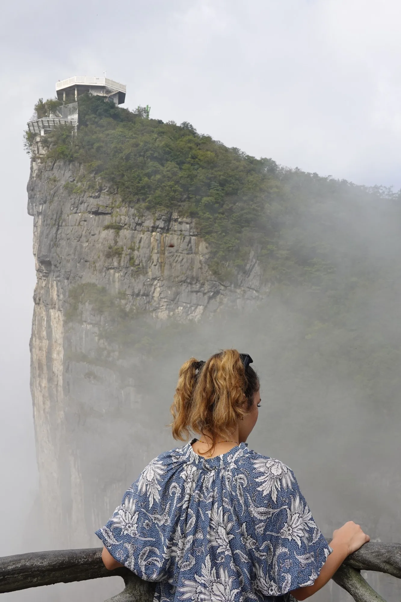
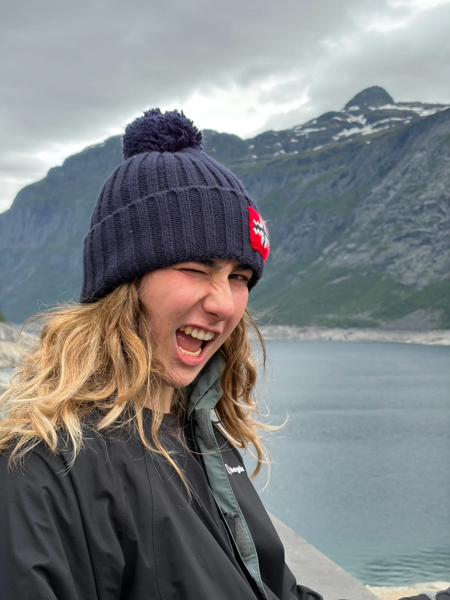
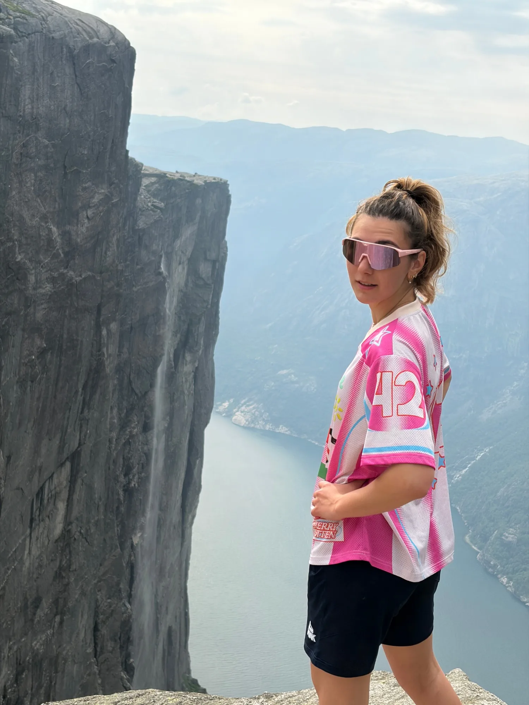
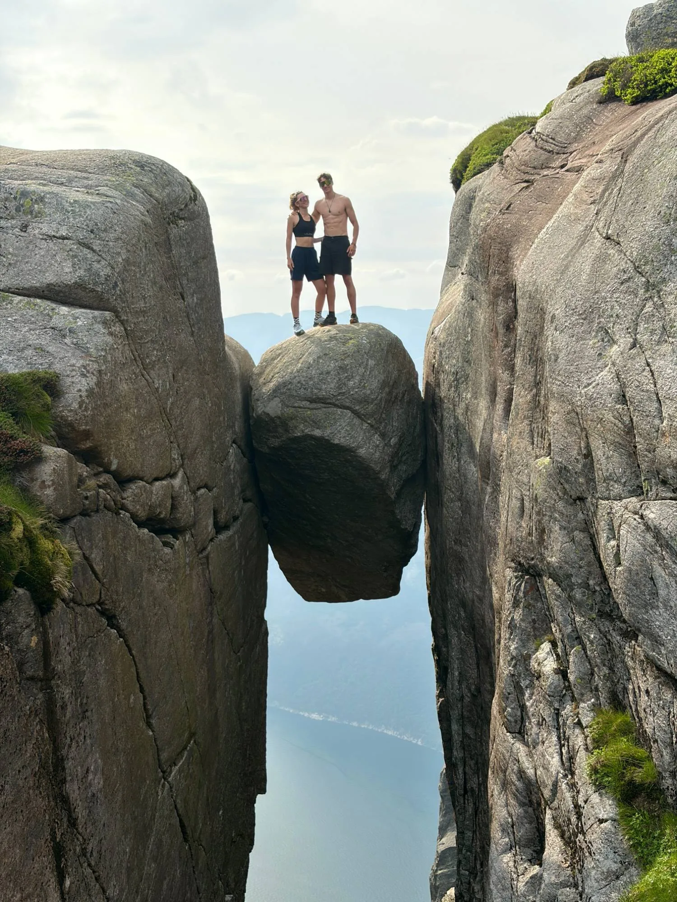
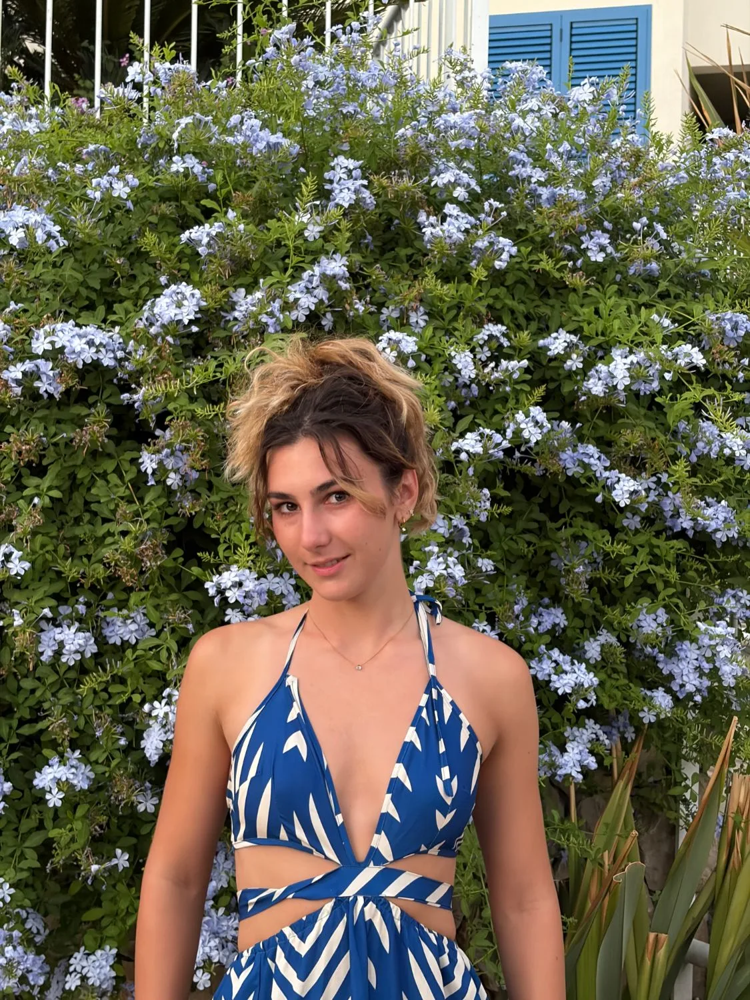
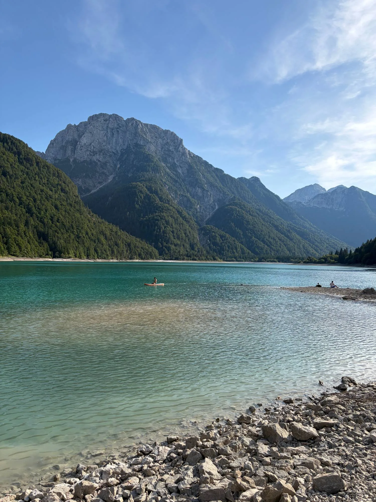
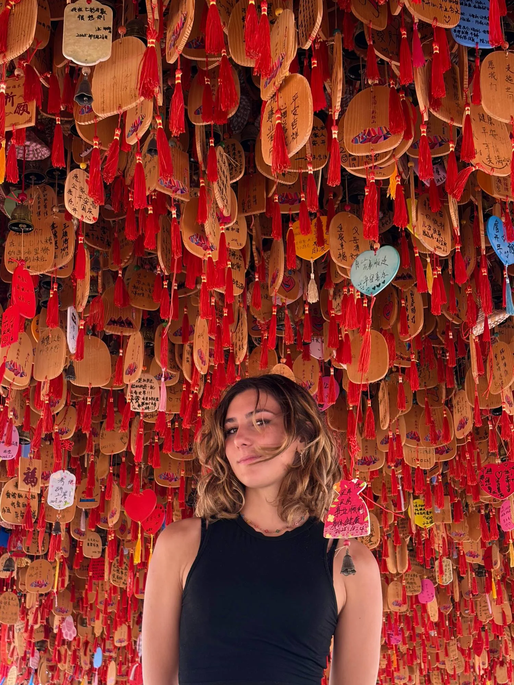
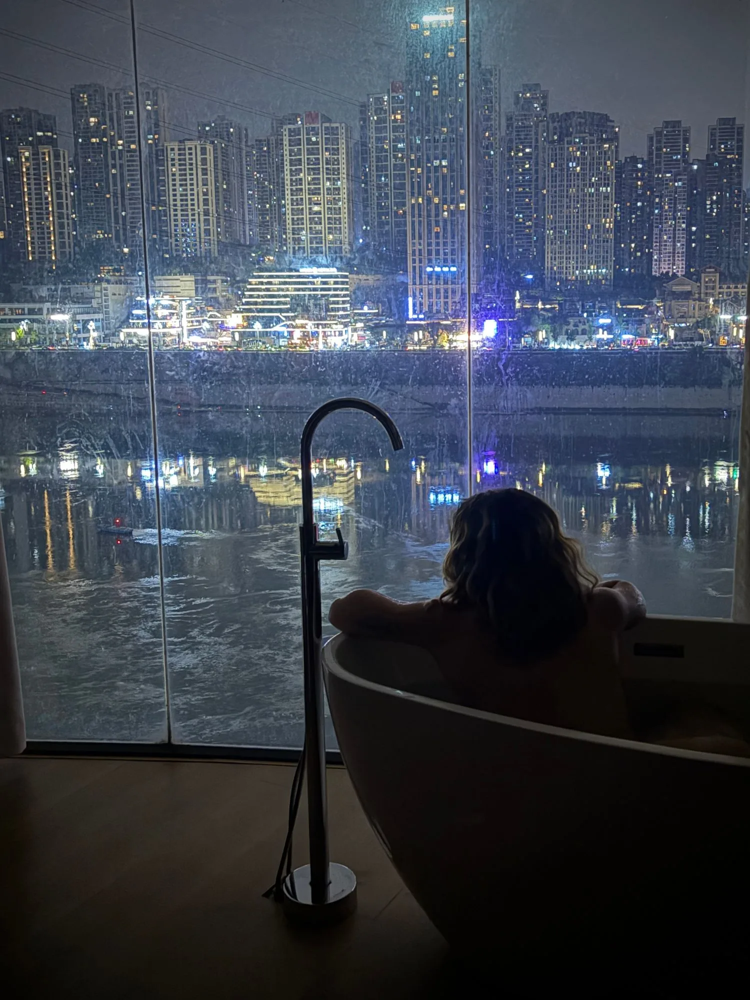

Eli

N° 00 — Index
Fog, fjords, faraway blues and city lights. A small archive of looking.
Scroll
N° 01 — China
above the clouds
Hello —
I collect *horizons* — misty peaks, northern cliffs, water so blue it looks *invented*, and every window I can find at night.
Chapter I
North
Grey skies, cold wind, a beanie pulled low and a two-thousand-foot drop just past the toes.



Some places only make sense from the edge.
Blues
Plumbago walls, printed dresses, and an alpine lake that couldn't decide between green and turquoise. Every summer turns out to be the same colour.


Plumbago
#A9B9E3Printed cotton
#2F4F9CPredil
#3FB2ACLate sky
#7EA6D8Blue is just distance, made visible.
Chapter III
a thousand wishes

one of them is mine
And at the end of every long day — a window, a river of lights, a warm bath.
